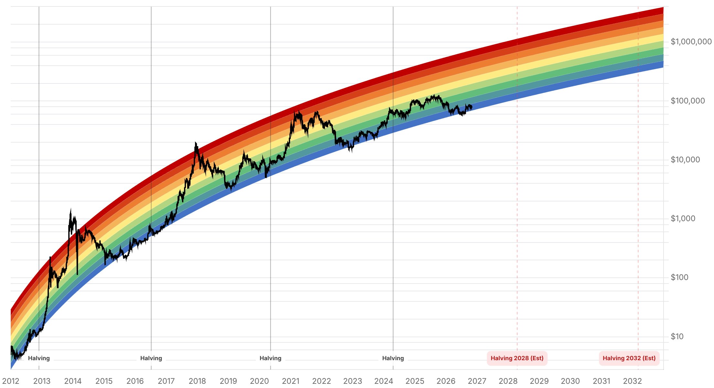

Reporte financiero
BTC cotiza en USD 77.695,19 en vivo (07:16 UTC), con una modesta recuperación intradía (+0,33%) y ya por encima del cierre de ayer (USD 77.434,75), aunque todavía lejos de los USD 81.267 del 28 de octubre. Lo nuevo desde el reporte de ayer: el hackeo de Binance avanzó de forma significativa en su resolución -Binance anunció el 31 de octubre que ya cubrió el 90% de los ~USD 6.300M robados (subiendo desde 80% el día previo) usando su fondo SAFU, parte del fondo de seguro de futuros y tesorería corporativa, con BTC, ETH, USDT, BNB, SOL, USDC, XRP, USD1, RLUSD y ZEC ya respaldados al 100%; el 10% restante son tokens menos líquidos fuera del top-10 que seguirá comprando vía mercado/OTC. La compañía planteó la reapertura de retiros para hoy domingo 1 de noviembre, sujeta a revisiones de seguridad finales -no se pudo confirmar si ya se concretó al momento de este reporte-. Además, y esto sí es una novedad respecto a ayer, el FBI confirmó oficialmente (noche del 31 de octubre) la atribución a Corea del Norte, cerrando la incertidumbre que ayer solo tenía respaldo de firmas privadas como Elliptic sin confirmación gubernamental. En paralelo, los accionistas de Strategy formalizaron el 28 de octubre la aprobación de dividendos diarios para las preferentes STRC/STRF/STRK/STRD, esquema que entra en vigor hoy para STRC según lo ya anticipado. Pero surge un nuevo frente de riesgo no cubierto ayer: MSCI finalizó una regla que trata a 'non-operating companies' (tesorerías dominadas por un solo activo) como inelegibles para sus índices Global Investable Market desde el cierre del 30 de noviembre (lista final el 11 de noviembre) -Strategy es la empresa más afectada, con JPMorgan estimando salidas pasivas de entre USD 2.800M (solo MSCI) y USD 11.600M (si S&P y FTSE Russell siguen el mismo camino). Michael Saylor calificó la regla de 'discriminatoria' y pidió su retiro, mientras la empresa sigue acumulando BTC (reporta más de 840.000 BTC en tesorería). El Fear & Greed Index subió de 30 a 34 (se mantiene en zona de Fear pero con mejora leve), coherente con el avance en la cobertura del hackeo. Sin novedades verificadas desde ayer en la Clarity Act, la apelación del fallo del Reino Unido sobre los 61.000 BTC, ni en la respuesta de Cantor Fitzgerald al plazo vencido de Blumenthal; se omiten cifras de flujos de ETF esta edición por falta de datos específicos y confiables de la semana.
El 31 de octubre Binance informó que ya cubrió el 90% de los aproximadamente USD 6.300M robados en el hackeo del 29 de octubre (subiendo desde el 80% reportado el día anterior), usando una combinación de su fondo SAFU, una porción del fondo de seguro de futuros y tesorería corporativa. Los activos ya respaldados al 100% incluyen BTC, ETH, USDT, BNB, SOL, USDC, XRP, USD1, RLUSD y ZEC; el 10% restante corresponde a tokens fuera del top-10 por capitalización, descritos como 'menos líquidos', que la compañía seguirá comprando vía mercado abierto u operaciones OTC hasta llegar al 100%. Cita textual de Binance: 'Our commitment remains the same: Binance will fully cover the financial impact of the funds stolen in this incident.' La compañía señaló la reapertura de retiros en múltiples redes como 'próximo hito' previsto para hoy domingo 1 de noviembre, sujeto a revisiones de seguridad finales -al momento de este reporte no hay confirmación pública de que ya se haya concretado-. La novedad más relevante frente al reporte de ayer es que, en la noche del 31 de octubre, el FBI confirmó oficialmente que Corea del Norte fue responsable del ataque; ayer esa atribución solo contaba con el respaldo de análisis privados (Elliptic), sin confirmación gubernamental -esto cierra una de las principales incertidumbres pendientes sobre el incidente. Fuente: CNBC (31-oct-2026).
MSCI finalizó (anuncio del 15 de octubre, vigente desde el cierre del 30 de noviembre, con la lista definitiva de empresas afectadas a publicarse el 11 de noviembre) una regla que trata a las 'non-operating companies' -empresas cuya tesorería está dominada por un solo activo- como inelegibles para sus índices Global Investable Market. Strategy es, por lejos, la empresa más grande señalada por esta regla: con una capitalización ajustada de ~USD 23.900M, representa aproximadamente el 87% de la capitalización combinada de las seis empresas afectadas (que también incluyen a Metaplanet y Yellow Cake). JPMorgan estimó salidas pasivas de ~USD 2.800M si solo MSCI aplica la exclusión, cifra que podría escalar hasta USD 11.600M si otros proveedores de índices como S&P y FTSE Russell adoptan criterios similares. Michael Saylor calificó la regla de 'discriminatory' ('discriminatoria') y pidió públicamente a MSCI que la retire, mientras la compañía continúa acumulando BTC -reporta actualmente más de 840.000 BTC en tesorería- a pesar de la amenaza de exclusión. Este es un contrapeso directo al tono optimista de StoneX y TD Cowen reportado ayer sobre la reestructuración de preferentes de Strategy: la mejora de liquidez que esos analistas destacaron convive ahora con un riesgo de demanda pasiva a la baja para la acción que no estaba en el radar hasta esta semana. En paralelo, los accionistas de Strategy formalizaron el 28 de octubre (junta especial) la aprobación de las enmiendas a los certificados de STRF/STRC/STRK/STRD que habilitan dividendos diarios -con ambas condiciones de plazo cumplidas, el esquema diario de STRC entra en vigor hoy, 1 de noviembre, tal como se anticipaba en el reporte de ayer-.
No se encontraron novedades verificables desde el reporte de ayer en la Clarity Act -sigue estancada tras el cloture fallido del 15 de septiembre (50-49, faltaron votos para los 60 necesarios), sin votación de piso confirmada para noviembre-, ni en la apelación al fallo del Reino Unido sobre los 61.000 BTC -la apelación sigue proyectada para 2027 según los abogados de las víctimas (Fieldfisher)-. Tampoco hay respuesta reportada de Cantor Fitzgerald al plazo del 23 de octubre fijado por el senador Blumenthal sobre sus vínculos con Tether, ni evidencia de que el Tesoro o el Departamento de Justicia hayan abierto una investigación formal. Se omiten cifras de flujos de ETFs de Bitcoin en esta edición: los resultados de búsqueda disponibles mezclaban cifras de meses anteriores sin una fuente específica y confiable para la semana en curso, y el workflow prioriza omitir un dato antes que citar una cifra dudosa.
| Periodo | Valor |
|---|---|
| 26 oct | 80006.66 |
| 27 oct | 80805.08 |
| 28 oct | 81267.59 |
| 29 oct | 77775.11 |
| 30 oct | 77198.21 |
| 31 oct | 77434.75 |
| 1 nov (en vivo) | 77695.19 |
| Periodo | Valor |
|---|---|
| Hoy | 34 |

“Our commitment remains the same: Binance will fully cover the financial impact of the funds stolen in this incident.”
“Discriminatory -referido a la nueva regla de MSCI que amenaza excluir a Strategy de sus índices por su tesorería concentrada en Bitcoin.”
El mercado parece estar digiriendo el hackeo de Binance de forma ordenada: cobertura al 90%, atribución oficial del FBI a Corea del Norte (cierra la incertidumbre que ayer quedaba abierta) y reapertura de retiros planeada para hoy. El riesgo residual de corto plazo es que esa reapertura falle, se retrase, o que el 10% de activos menos líquidos sea más difícil de cubrir de lo previsto -cualquiera de esos escenarios podría revertir la mejora reciente del Fear & Greed Index (30 a 34).
Se abre un nuevo frente de riesgo para Strategy/MSTR que no existía ayer: la regla de MSCI (vigente desde el 30 de noviembre, lista final el 11 de noviembre) podría forzar ventas pasivas de hasta USD 11.600M si otros proveedores de índices siguen el mismo camino, presionando el precio de MSTR y su capacidad de financiarse para seguir comprando BTC -esto contrapesa el tono optimista de StoneX y TD Cowen reportado ayer sobre la reestructuración de preferentes. La Fed sostuvo tasas en 3,75-4% el 28 de octubre, manteniendo presión de financiamiento sobre activos de riesgo sin cambios desde ayer.
Sin cambios en los objetivos de precio de largo plazo ya reportados en ediciones anteriores (Citigroup, Bernstein, Standard Chartered, Tom Lee, NYDIG, Armstrong). La resolución más ordenada de lo esperado del hackeo de Binance (90% cubierto, atribución oficial) reduce algo el riesgo reputacional de corto plazo para la infraestructura de exchanges centralizados, pero el debate de fondo sobre riesgo de custodia centralizada sigue abierto y no altera los catalizadores estructurales ya identificados (adopción institucional, halving de 2028, marco regulatorio pendiente vía Clarity Act).
Binance planteó la reapertura de retiros para el 1 de noviembre como 'próximo hito', sujeta a revisiones de seguridad finales. Una reapertura exitosa en todas las redes consolidaría la mejora reciente del sentimiento (Fear & Greed de 30 a 34); un retraso o nuevo incidente podría revertirla rápidamente.
JPMorgan estima salidas pasivas de entre USD 2.800M y USD 11.600M dependiendo de si otros proveedores de índices (S&P, FTSE Russell) siguen a MSCI. Esto es un riesgo nuevo y específico para quienes tengan exposición a MSTR como proxy de Bitcoin, independiente del precio de BTC en sí -vigilar la publicación del 11 de noviembre y cualquier reacción de precio de MSTR en las semanas previas.
Aunque Binance cubrió el 90% de lo robado y el FBI confirmó la atribución, el incidente reafirma el riesgo de concentrar activos en hot wallets de exchanges centralizados. La resolución relativamente ordenada no elimina el argumento de fondo a favor de autocustodia o cold storage para tenencias de largo plazo.